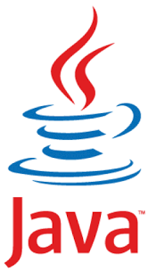
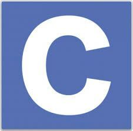
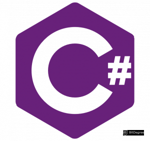
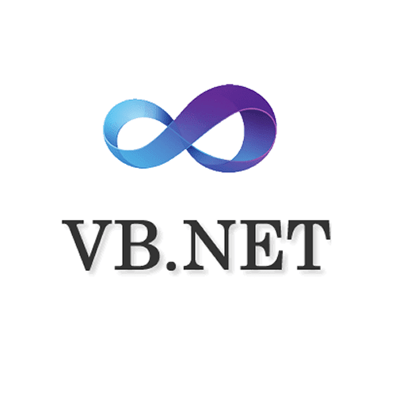
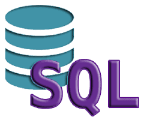
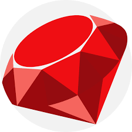

| JAVA |
 |
Java es rápido, seguro y fiable. Desde portátiles hasta centros de datos, desde consolas para juegos hasta computadoras avanzadas, desde teléfonos móviles hasta Internet, Java está en todas partes, si es ejecutado en una plataforma no tiene que ser recompilado para correr en otra. Java es, a partir de 2012, uno de los lenguajes de programación más populares en uso, particularmente para aplicaciones de cliente-servidor de web, con unos diez millones de usuarios reportados. |
link java |
| C |
 |
C es un lenguaje de programación de propósito general, es un lenguaje orientado a la implementación de sistemas operativos, concretamente Unix. C es apreciado por la eficiencia del código que produce y es el lenguaje de programación más popular para crear software de sistema, aunque también se utiliza para crear aplicaciones. |
link C |
| PYTHON |
 |
Python es un lenguaje de programación interpretado cuya filosofía hace hincapié en la legibilidad de su código. Se trata de un lenguaje de programación multiparadigma, ya que soporta orientación a objetos, programación imperativa y, en menor medida, programación funcional. Es un lenguaje interpretado, dinámico y multiplataforma. |
link Python |
| C# |
 |
C# es un lenguaje de programación multiparadigma desarrollado y estandarizado por Microsoft como parte de su plataforma .NET, que después fue aprobado como un estándar por la ECMA (ECMA-334) e ISO (ISO/IEC 23270). C# es uno de los lenguajes de programación diseñados para la infraestructura de lenguaje común. Su sintaxis básica deriva de C/C++ y utiliza el modelo de objetos de la plataforma .NET, similar al de Java, aunque incluye mejoras derivadas de otros lenguajes. |
link C# |
| C++ |
 |
C++ es un lenguaje de programación diseñado en 1979 por Bjarne Stroustrup. La intención de su creación fue extender al lenguaje de programación C mecanismos que permiten la manipulación de objetos. En ese sentido, desde el punto de vista de los lenguajes orientados a objetos, C++ es un lenguaje híbrido. |
link C++ |
| VISUAL BASIC |
 |
Visual Basic .NET es un lenguaje de programación orientado a objetos. Su introducción resultó muy controvertida, ya que debido a cambios significativos en el lenguaje VB.NET no es retro compatible con Visual Basic, pero el manejo de las instrucciones es similar a versiones anteriores de Visual Basic, facilitando así el desarrollo de aplicaciones más avanzadas con herramientas modernas. Para mantener eficacia en el desarrollo de las aplicaciones. La gran mayoría de programadores de VB.NET utilizan el entorno de desarrollo integrado Microsoft Visual Studio en alguna de sus versiones, aunque existen otras alternativas, como SharpDevelop. |
link Visual Basic |
| JAVASCRIPT |
 |
JavaScript es un lenguaje de programación interpretado, dialecto del estándar ECMAScript. Se define como orientado a objetos, basado en prototipos, imperativo, débilmente tipado y dinámico. Se utiliza principalmente del lado del cliente, implementado como parte de un navegador web permitiendo mejoras en la interfaz de usuario y páginas web dinámicas y JavaScript del lado del servidor (Server-side JavaScript o SSJS). Su uso en aplicaciones externas a la web, por ejemplo en documentos PDF, aplicaciones de escritorio (mayoritariamente widgets) es también significativo. |
link JavaScript |
| PHP |
 |
PHP es un lenguaje de programación de uso general que se adapta especialmente al desarrollo web. |
link PHP |
| SWIFT |
 |
Swift es un lenguaje de programación multiparadigma creado por Apple enfocado en el desarrollo de aplicaciones para iOS y macOS. Fue presentado en la WWDC 20147 y está diseñado para integrarse con los Frameworks Cocoa y Cocoa Touch; puede usar cualquier biblioteca programada en Objective-C y llamar a funciones de C. También es posible desarrollar código en Swift compatible con Objective-C bajo ciertas condiciones. Swift tiene la intención de ser un lenguaje seguro, de desarrollo rápido y conciso. |
link swift |
| SQL |
 |
SQL es un lenguaje de dominio específico utilizado en programación, diseñado para administrar, y recuperar información de sistemas de gestión de bases de datos relacionales. Una de sus principales características es el manejo del álgebra y el cálculo relacional para efectuar consultas con el fin de recuperar, de forma sencilla, información de bases de datos, así como realizar cambios en ellas. |
link SQL |
| RUBY |
 |
Ruby es un lenguaje de programación interpretado, reflexivo y orientado a objetos. Combina una sintaxis inspirada en Python y Perl con características de programación orientada a objetos similares a Smalltalk. Comparte también funcionalidad con otros lenguajes de programación como Lisp, Lua, Dylan y CLU. Ruby es un lenguaje de programación interpretado en una sola pasada y su implementación oficial es distribuida bajo una licencia de software libre. |
link Ruby |